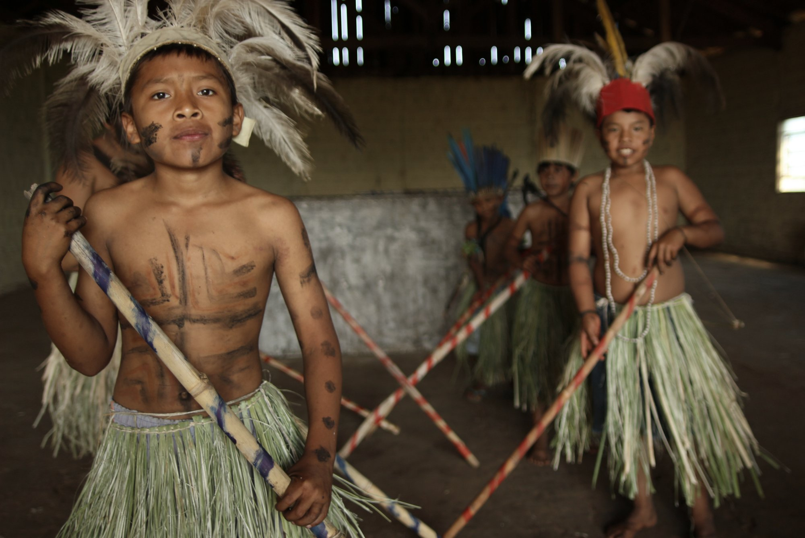

Terenas
Da família linguística aruak, encontram-se nos estados do Mato Grosso, Mato Grosso do Sul e São Paulo.
Os Terena, também chamados Terenoe, são uma etnia indígena brasileira. Pertencem ao grupo maior dos guanás.
Vivem principalmente no estado de Mato Grosso do Sul (Áreas Indígenas Aldeinha, Buriti, Dourados, Lalima, Limão Verde, Nioaque, Pilade Rebuá, Taunay/Ipegue e Terras Indígenas Água Limpa e Cachoeirinha, a oeste da Reserva Indígena Kadiwéu, na Área Indígena Umutina e a leste do rio Miranda).
Podem ser encontrados também no interior do estado brasileiro de São Paulo (Áreas Indígenas Araribá, Avaí e Icatu). Além disso, situam-se ainda na margem esquerda do alto rio Paraguai, em Mato Grosso; também vivem no norte deste estado, entre os municípios de Peixoto de Azevedo, Matupá e Guarantã do Norte, na Terra Indígena Gleba Iriri Novo, às margens do rio Iriri, nas aldeias Kopenoty, Kuxonety Poke'é, Inamaty Poke'é e Turipuku.
Possuem a cultura do plantio e apresentam um grande grau de integração com a sociedade circundante.
História
Contatos dos Terena com os europeus foram descritos desde o século XVI. À época, buscando caminhos que levassem aos Andes, os espanhóis estabeleceram relações com os Terena, à época chamados de Guaná, na região do Chaco paraguaio. A chegada dos brancos trouxe muitas mudanças nas vidas dos indígenas. Isso fez os Terena buscarem, durante certo período, locais onde pudessem exercer seu modo de vida sem a influência devastadora da colonização. Foi assim que esses indígenas chegaram, no século XVIII, ao atual território brasileiro, se instalando na região do Mato Grosso do Sul.
Apesar disso, não demorou muito para os conflitos trazidos pela colonização voltarem a atormenta-los. O principal evento que os assolou foi a Guerra do Paraguai, contenda causada por uma disputa de fronteiras entre Paraguai, Brasil, Argentina e Uruguai. A guerra acabou envolvendo os Terena, que nela tiveram de participar para garantir seus territórios. Os conflitos ocasionaram a morte de muitos indígenas. Após a guerra, a ocupação da região fronteiriça com o Paraguai por não indígenas, que tinha por objetivo garantir os limites territoriais estabelecidos com o fim dos conflitos, trouxe inúmeros problemas aos Terena. Os rebanhos das fazendas criadas destruíam as plantações dos indígenas, a ocupação territorial limitava-os a pequenas áreas e os conflitos eram frequentes. Nesse período, os Terena se viram obrigados a se empregar como trabalhadores nas fazendas da região, o que trouxe uma situação de servidão dos indígenas (BITTENCOURT e LADEIRA, 2000).
Mesmo assim, algumas poucas famílias dessa população indígena se mantiveram às margens das fazendas, ocupando pequenos núcleos familiares irredutíveis à colonização. Foram essas ocupações que, regularizadas no início de século XX, formaram as Reservas Indígenas de Cachoeirinha e Taunay/ Ipegue. Mas foi somente entre 1927 e 1930 que os Terena chegaram ao estado de São Paulo, forçados pelo Serviço de Proteção ao Índio (SPI), por duas razões. Em primeiro lugar, para ocupar o então Posto Indígena Araribá, que tinha ficado praticamente desabitado em função de um surto de gripe espanhola que dizimou a população guarani ali residente. Além disso, os agentes do SPI acreditavam que esses indígenas, exímios agricultores, poderiam de alguma forma instruir os Kaingang em atividades de lavoura e criação de animais (COMISSÃO PRÓ-ÍNDIO, 1984).

Modo de Vida
Atualmente, os Terena mantêm sua tradição de bons agricultores dando uma grande ênfase ao cultivo de diversos espécimes. Nas Terras Indígenas onde habitam, há grandes áreas de plantação de mandioca. Através dela, há a produção da farinha de mandioca, fundamental para a alimentação dos Terena. É durante o processo de produção dessa farinha que se extrai o polvilho que, junto com a calda da mandioca ralada, é o ingrediente necessário para a produção do Poreú (uma espécie de mingau), do Lapepé (bolo) e do Hihi, alimentos tradicionais que são fundamentais para a dieta terena. Estes indígenas também cultivam, em suas terras, o milho, o feijão verde, a batata doce e o amendoim (CÂNDIDO et alli, 2011).
Além disso, nas Terras Indígenas ocupadas por eles, há uma grande importância do xamanismo de cura, através dos curadores, koixomuneti (CARVALHO, 2008). Os koixomuneti são rezadores que têm função de curador e, principalmente, de prolongador da vida, através das relações que estabelecem com outros koixomuneti já mortos. Por isso, esses xamãs têm um importante status nas comunidades terena. Entretanto, é importante notar que os koixomuneti são também temidos, pois há aqueles que são antes feiticeiros que curadores, e podem trazer malefícios às vidas das pessoas.